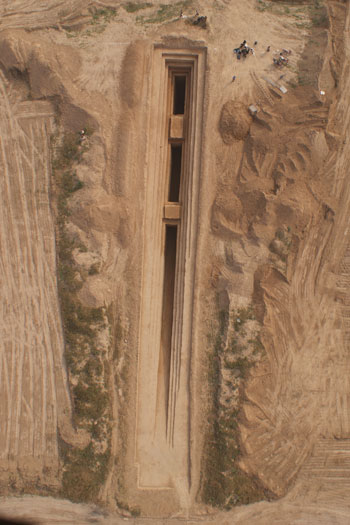

西安咸阳国际机场二期扩建工程征地区域位于咸阳市渭城区北杜镇、底张镇和周陵镇，分布在西安咸阳国际机场南侧、西侧和东侧，占地面积约8000亩。陕西省考古研究院和陕西省文物勘探有限责任公司于2008年6月开始对西安咸阳国际机场二期扩建工程征地区域进行文物勘探，截止2009年4月，在西安咸阳国际机场二期工程征地区域内已发现古代墓葬443座、灰坑179座、窑址32座，其它遗迹18处。总计古代文化遗迹672处。
2009年度发掘完成墓葬259座，陶窑19座，灰坑46个，出土文物3082件。2010年度共发掘墓葬60余座，出土文物1300余件。重要发现有十六国大型墓葬1座、唐代围沟墓5座、唐代双室砖墓1座。具体介绍如下：
一、十六国大墓（M298）
M298为斜坡墓道二天井的双室土洞墓，平面形制呈南北向“干”字形。坐南向北，方向0度。其南北水平总长75.25米，墓道开口距现存地表深0.45—0.5米，墓室底距现存地表深16.05米。其结构由墓道、过洞、天井、封门、甬道、前室、过道、后室等部分组成。
墓道南北水平长36.85米、坡底长37.9米，东西宽2.1米。在墓道两个过洞上方，留有四方形生土台，在台面的四周，雕刻有直櫺窗，并上一层白灰面，涂红彩。在墓道、天井外侧依次留有四个翻土台，台面宽在0.5米左右。翻土台从墓道头向墓室方向延伸，由浅及深，结束于前甬道上方。最上部的翻土台较短。
前甬道封门用二道条砖封门。砖封门的顶上，在土壁上雕刻出立体门楼屋面。门楼宽1.4米、屋顶坡面长0.3米、高约0.4米。楼面上的正脊、两垂脊、筩瓦、滴水、流水瓦等一应俱全。
M298共出土随葬品124件（组），质类有陶器、釉陶器、铜器、铁器、金银器、骨器、漆木器等。原摆放位置大体可分为五组：第一组位于甬道东西两壁下，器类有陶胡跪武士俑、男侍俑，陶猪、狗、牛、鞍马俑等。第二组位于前室入口及西壁下，器类有陶男侍俑，井、牛、车，铜熨斗，陶盆、耳杯、勺、魁，漆木箱。第三组位于前室东壁下，器类有陶鸡，女侍俑、乐俑等。第四组位于过道入口处及过道内，器类有铜钱，铁剪刀，陶牛、仓，釉陶瓶，陶空柱盆、灯、磨，女侍俑，灶、井等。第五组位于后室西北角，椁具前档前及棺具内，器类有金泡、金环，鎏金小铜盒，陶碓、陶彩绘多子格、陶牛、陶罐，铜鐎斗、铜罐、铜熏炉、铜熏炉承盘，骨尺、铜钱等。
陶乐俑出土19件，均坐姿。可分为三组，体形稍大者出土12件两组，每组6件。体形稍小者出土7件，其中有2件造型相同。
M298甬道、墓室全部粉有白灰面，原来都绘有壁画。因为早期墓室坍塌，多次进水等原因，壁画大部分已脱落。现存前室北壁西侧残留一幅，形象为一柱戟武士。武士用黑彩白描而成，头挽黑色高髻，面相清秀方圆，五官端正，身穿交领右衽长衫，腰系带，右手拄长柄花戟，其余部分已残缺不清。西壁残留有一幅侍女图。后室南壁残留有几个人物的头部，面部已不清。
M298是关中地区目前发现的规模最大的十六国墓葬，而且也是唯一一座墓道在北墓室在南的墓葬。从形制和出土器物判断，应该是这一时期等级较高的贵族墓，不排除是皇族墓葬的可能性。
二、唐代墓葬
1、唐代围沟墓
唐代围沟墓发掘5座，其中南围沟带凸字形的3座，直线型的2座。以M118为例：
M118围沟平面呈凸字形，南北长120米、东西长101.5米米。其中南围沟中间突出一块，应是象征大门的位置，故南围沟长129.6米。围沟总长471.1米。围沟上口宽2.3米、下口宽1.8米、深1.2—1.6米。沟两壁做工粗糙、未经铲平修整。沟内填五花土，未经夯打。
墓葬位于围沟的中部，为长斜坡多天井的砖室墓。由墓道、五个过洞、五个天井、四个壁龛、甬道、墓室组成。墓全长46.75米，方向175°
墓道长17米、宽2.6米。原两壁绘有出行仪仗等壁画，发掘时已基本脱落，只残留部分线条。墓道的斜坡上有两道凹槽，宽0.15米，延伸到墓室，应为下葬时运送重物所留。墓室为砖劵，平面基本为方形，边长4.26米。
墓葬因盗扰严重，只在壁龛内出土有风帽俑、骑马俑50余件。出土有墓志盖一块，上书“大唐故归州刺史赠左骁卫大将军滕州都督驸马都尉执失府君之墓志铭”可知，该墓墓主为唐代突厥族的首领执失思力。
《新唐书卷一一〇 列传第三五》记载：“执失思力，突厥酋长也。贞观中，护送隋萧后入朝，授左领军将军。…
诏尚九江公主，拜驸马都尉，封安国公。坐交房遗爱，高宗以其战多，赦不诛，流巂州。主请削封邑偕往。主前卒。龙朔中，以思力为归州刺史，卒。麟德元年，复公主封邑，赠思力胜州都督，谥曰景。”
2、唐代双室砖墓
发现一座，为M151。是机场二期工程考古发掘中唐代墓葬中最大的一座。地面保存有封土，墓前发现有石刻。
封土为四边形，底边边长28米、高11米。经对封土解剖，由上至下共有夯层91层，每层厚约10厘米，顶部土色略杂，其余土色纯净，夯筑密实，夯窝清晰。有的层位发现有车辙印和牛蹄印。封土的下部发现垫有圆木。
M151为斜坡墓道多天井双室砖券墓，平面略呈一个“干”字形，坐北向南，方向180度。墓葬水平总长74.2米，墓道开口距现存地表深0.68米，墓室底距现存地表深12.5米。其结构由墓道、过洞、天井、壁龛、甬道、前、后墓室、后甬道等部分组成。
墓道和墓室均绘有壁画，因盗扰破坏较严重，墓道的青龙、白虎、出行仪仗、祥云等。第二过洞保存一幅牛拉车图的大部分。其余壁画已不存。
该墓前、后室修造时为大开挖，土圹竖穴呈圆角方形，其前室土圹开口边长为11.6×11.2米，后室为8.6×13.4米。土圹四壁从开口至墓底逐渐倾斜内收。前室土圹底东西边长6.7－6.9米、南北边长5.9－6.1米，后室土圹底边长7.7×7.6米。土圹竖穴挖好后，再用条砖券筑砖室。砖券的前、后室形制结构及大小基本相同。前室南北进深3.9米、东西面宽3.7米、通高6.1米；后室南北进深4.4米、东西宽4.6米、通高6.1米。
在前后室的顶部，穹窿顶外圈上部垫厚约0.1米的活土踩实后，用条砖堆砌成盝顶形砖墩，盝顶下部四壁用条砖丁顺错杂平砌4－6层，四周逐层叠涩回缩成台阶状，共11－13层。似乎象征佛塔的造型，这也是唐代砖室墓结构中第一次发现。
在第四过洞下斜坡面上出土墓志一合，从而确定了该墓主人的身份地位。墓主姓窦，名孝谌，唐玄宗时追封为太尉、豳国公，死于武则天通天元年（697年）罗州官舍，武则天圣历元年（698年）葬于洛阳，玄宗先天元年（712年）迁葬与夫人庞氏合葬于咸阳之洪渎原。该墓与其第三子唐毕国公窦希瓘（M152）墓相毗邻。窦孝谌其为唐睿宗李旦的国丈（唐玄宗生母昭成皇太后为窦孝谌第三女），唐玄宗李隆基的外公，身为外戚，窦孝谌与其三子希瑊、希球、希瓘均官拜国公。据《唐书》记载，窦氏一门在唐中宗、睿宗、玄宗三朝，曾有九人官封国公，其家族在盛唐时期声名显赫，权倾朝野，盛极一时。但在武则天当朝时，其妻庞氏因私讥武则天，差点丧命。窦孝谌受累被贬罗州，到死未返京城。玄宗践祚，为其平反昭雪，迁葬于京稷之地，恩赐颇丰。